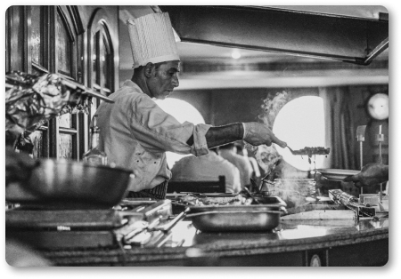
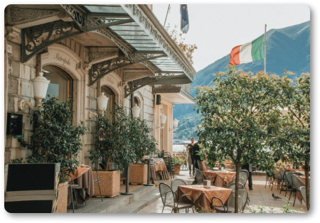
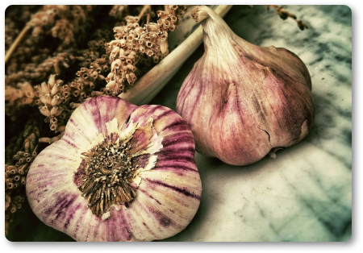
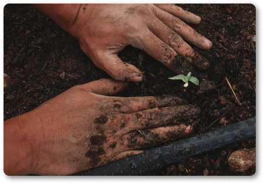

가장 가까운, 가장 확실한 내 옆의 이탈리아, 매드포갈릭
OUR STORY
매드포갈릭은 샐러드, 파스타. 피자, 리조또 같이 이탈리아 요리를 주 메뉴로하며,
스테이크와 와인도 판매하고 있습니다.


연간 400톤 정도 규모로 경삭북도 의정군에서 재배한 마늘로 요리합니다.
단순히 마늘을 많이 쓰는 것이 아니라,
마늘의 매운 맛에 거부감 있는 사람들을 위해 매운 맛을 제거한뒤
튀기거나 찌는 방식으로 마늘이 들어간 소스를 만듭니다.

